|  |
7.2. SNMP-Based Management Tools
There are several extremely powerful and useful noncommercial SNMP tools. Tools from the NET SNMP project, scotty, and tkined are described here.7.2.1. NET SNMP (UCD SNMP)
The University of California at Davis implementation of SNMP (UCD SNMP) has its origin in a similar project at Carnegie Mellon University under Steve Waldbusser (CMU SNMP). In the mid-nineties, the CMU project languished. During this period, the UCD project was born. The UCD project has greatly expanded the original CMU work and is flourishing, thanks to the work of Wes Hardaker. The CMU project reemerged for a while with a somewhat different focus and has seen a lot of support in the Linux community. Both are excellent. While only UCD SNMP will be described here, the basics of each are so similar that you should have no problem using CMU SNMP once you are familiar with UCD SNMP. Very recently, UCD SNMP has been renamed NET SNMP to reflect some organizational changes. NET SNMP is actually a set of tools, a SNMP library, and an extensible agent. The source code is available and runs on a number of systems. Binaries are also available for some systems, including Microsoft Windows. NET SNMP supports SNMPv1, SNMPv2c, and SNMPv3. Admittedly, the NET SNMP toolset is not ideal for the routine management of a large network. But it is ideal for learning about SNMP, is not an unreasonable toolset for occasional tasks on smaller networks, and can be particularly useful in debugging SNMP problems, in part because it separates SNMP functions into individual utilities. The agent software is a logical choice for systems using Linux or FreeBSD and is extensible. Most, but not all, of the utilities will be described.7.2.1.1. snmpget
In the last section, it was stated that there are three messages that can be sent by a management station: GET_REQUEST, GET_NEXT_REQUEST, and SET_REQUEST. NET SNMP provides utilities to send each of these messages -- snmpget, snmpgetnext, and snmpset, respectively. In order to retrieve the value of an object, it is necessary to specify the name or IP address of the remote host, a community string for the host, and the OID of the object. For example:There are a couple of points to make about the OID. First, notice the 0 at the end. This is an offset into the data. It is a common error to omit this. If you are looking at a table, you would use the actual offset into the table instead of a 0. For example, the description of the third interface in the interface table would have the OID ifDescr.3. Second, the leading dot is important. NET SNMP will attempt to attach a prefix to any OIDs not beginning with a dot. By default, the prefix is 1.3.6.1.2.1, but you can change this by setting the environment variable PREFIX. In this example, we have specified the OID explicitly. Without the leading dot, snmpget would have added the prefix to what we had, giving an OID that was too long. On the other hand, you could just use 1.1.0 without the leading dot and you would get the same results. Initially, using the prefix can be confusing, but it can save a lot of typing once you are used to it. Of course, you can also use names rather than numbers, provided the appropriate MIB is available. This is shown in the next two examples:bsd4# snmpget 172.16.1.5 public .1.3.6.1.2.1.1.1.0 system.sysDescr.0 = "APC Embedded PowerNet SNMP Agent (SW v2.2, HW vB2, Mod: AP9 605, Mfg 08/10/96, SN: WA9632270847, Agent Loader v1.0)"
In the first case, the full path was given, and in the second the prefix was used. (Don't forget the trailing 0.) Numbers and names can be mixed:bsd4# snmpget 172.16.1.5 public iso.org.dod.internet.mgmt.mib-2.system.sysDescr.0 system.sysDescr.0 = "APC Embedded PowerNet SNMP Agent (SW v2.2, HW vB2, Mod: AP9 605, Mfg 08/10/96, SN: WA9632270847, Agent Loader v1.0)" bsd4# snmpget 172.16.1.5 public system.sysDescr.0 system.sysDescr.0 = "APC Embedded PowerNet SNMP Agent (SW v2.2, HW vB2, Mod: AP9 605, Mfg 08/10/96, SN: WA9632270847, Agent Loader v1.0)"
(Frankly, I can't see much reason for doing this.) Also, if the MIB is known, you can do a random-access lookup for unique node names:bsd4# snmpget 172.16.1.5 public .1.3.6.internet.2.1.system.1.0 system.sysDescr.0 = "APC Embedded PowerNet SNMP Agent (SW v2.2, HW vB2, Mod: AP9 605, Mfg 08/10/96, SN: WA9632270847, Agent Loader v1.0)"
In this example, only the final identifier in the OID, upsBasicIdentMode.0, is given, and the MIB is searched to construct the full OID. This can be particularly helpful if you want to query several objects with a single snmpget. You can also use multiple OIDs in the same snmpget command to retrieve the values of several objects.bsd4# snmpget 172.16.1.5 public upsBasicIdentModel.0 enterprises.apc.products.hardware.ups.upsIdent.upsBasicIdent.upsBasicIdentModel. 0 = "APC Smart-UPS 700 "
7.2.1.2. Configuration and options
Before we look further at the NET SNMP commands, let's discuss configuration and options. For the most part, these tools share the same configuration files and options. (A few exceptions will be noted when appropriate.) The general configuration file is snmp.conf and is typically in the /usr/local/share/snmp, /usr/local/lib/snmp, or $HOME/.snmp directory. This search path can be overridden by setting the SNMPCONFPATH environment variable. Further documentation can be found in the snmp.conf Unix manpage. This manpage also describes environment variables. One particular concern in configuring the software is the proper installation of MIBs. As noted earlier, use of the name form of OIDs works only if the appropriate MIB[30] is loaded. Devices may have more than one MIB associated with them. In the examples just presented, we have been interacting with an SNMP-controlled uninterruptible power supply (UPS) manufactured by APC Corp. With this device, we can use the standard default MIB-II defined in RFC 1213. This standard MIB defines objects used by most devices. If you have correctly installed the software, this MIB should be readily available. There are two additional MIBs that may be installed for this particular device. The first is the IETF MIB, which defines a generic UPS. This is the UPS-MIB defined by RFC 1628. The third MIB, PowerNet-MIB, contains APC Corp.'s custom extensions. These last two MIBs came on a diskette with the SNMP adapter for this particular UPS.[30]When a MIB is loaded, it becomes part of the MIB. Don't say I didn't warn you.To install these MIBs, the files are first copied to the appropriate directory, /usr/local/share/snmp in this case. (You may also want to rename them so that all your MIB files have consistent names.) Next, the environment variable MIBS is set so the MIBs will be loaded. This can be a colon-delimited list of individual MIB names, but setting MIBS to ALL is usually simpler. On a Windows computer, use the command:
On a Unix system using the Bash shell, you would use:C:\usr\bin>set MIBS=ALL
For the C-shell, use:export MIBS=ALL
Of course, this may vary depending on the shell you use. Alternately, you can use the environment variable MIBFILES to specify filenames. There is also a command-line option with most of these utilities, -m, to load specific MIBs. If the MIBs are not installed correctly, you will not be able to use names from the MIB, but you can still access objects by their numerical OIDs. The NET SNMP commands use the same basic syntax and command-line options. For example, the earlier discussion on OID usage applies to each command. This is described in the variables manpage. The manpages for the individual commands are a little sparse. This is because the descriptions of the options have been collected together on the snmpcmd manpage. Options applicable to a specific command can be displayed by using the -h option. Let's return to snmpget and look at some of the available options. The -O options control how output is formatted. The default is to print the text form of the OID:setenv MIBS ALL
-On forces the OID to be printed numerically:bsd4# snmpget 172.16.1.5 public .1.3.6.1.4.1.318.1.1.1.1.1.1.0 enterprises.apc.products.hardware.ups.upsIdent.upsBasicIdent.upsBasicIdentModel. 0 = "APC Smart-UPS 700 "
Sometimes the value of an object will be a cryptic numerical code. By default, a description will be printed. For example:bsd4# snmpget -On 172.16.1.5 public .1.3.6.1.4.1.318.1.1.1.1.1.1.0 .1.3.6.1.4.1.318.1.1.1.1.1.1.0 = "APC Smart-UPS 700 "
Here, the actual value of the object is 2. This description can be suppressed with the -Oe option:bsd4# snmpget 172.16.1.5 public ip.ipForwarding.0 ip.ipForwarding.0 = not-forwarding(2)
This could be useful in eliminating any confusion about the actual stored value, particularly if you are going to use the value subsequently with a SET command. Use the -Os, -OS, and -Of commands to control the amount of information included in the OID. The -Os option displays the final identifier only:bsd4# snmpget -Oe 172.16.1.5 public ip.ipForwarding.0 ip.ipForwarding.0 = 2
The -OS option is quite similar to -Os except that the name of the MIB is placed before the identifier:bsd4# snmpget -Os 172.16.1.5 public enterprises.318.1.1.1.1.1.1.0 upsBasicIdentModel.0 = "APC Smart-UPS 700 "
-Of forces the display of the full OID:sd4# snmpget -OS 172.16.1.5 public enterprises.318.1.1.1.1.1.1.0 PowerNet-MIB::upsBasicIdentModel.0 = "APC Smart-UPS 700 "
This leaves no question about what you are looking at. There are a number of additional options. The -V option will return the program's version. The version of SNMP used can be set with the -v option, either 1, 2c, or 3. The -d option can be used to dump all SNMP packets. You can set the number of retries and timeouts with the -r and -t options. These few options just scratch the surface. The syntax for many of these options has changed recently, so be sure to consult the snmpcmd manpage for more options and details for the version you use.bsd4# snmpget -Of 172.16.1.5 public enterprises.318.1.1.1.1.1.1.0 .iso.org.dod.internet.private.enterprises.apc.products.hardware.ups.upsIdent. upsBasicIdent.upsBasicIdentModel.0 = "APC Smart-UPS 700 "
7.2.1.3. snmpgetnext, snmpwalk, and snmptable
Sometimes you will want to retrieve several related values that are stored together within the agent. Several commands facilitate this sort of retrieval. The snmpgetnext command is very similar to the snmpget command. But while snmpget returns the value of the specified OID, snmpgetnext returns the value of the next object in the MIB tree:As you can see from this example, snmpgetnext can be used to walk through a sequence of values. Incidentally, this is one of the few cases in which it is OK to omit the trailing 0. This command can be particularly helpful if you don't know the next identifier. If you want all or most of the values of adjacent objects, the snmpwalk command can be used to retrieve a subtree. For example:bsd4# snmpget -Os 172.16.1.5 public sysDescr.0 sysDescr.0 = APC Embedded PowerNet SNMP Agent (SW v2.2, HW vB2, Mod: AP9605, Mfg 08/10/96, SN: WA9632270847, Agent Loader v1.0) bsd4# snmpgetnext -Os 172.16.1.5 public sysDescr.0 sysObjectID.0 = OID: smartUPS700 bsd4# snmpgetnext -Os 172.16.1.5 public sysObjectID.0 sysUpTime.0 = Timeticks: (77951667) 9 days, 0:31:56.67 bsd4# snmpgetnext -Os 172.16.1.5 public sysUpTime.0 sysContact.0 = Sloan
Be prepared to be overwhelmed if you don't select a small subtree. You probably wouldn't want to walk the mib-2 or enterprises subtree:bsd4# snmpwalk 172.16.1.5 public system system.sysDescr.0 = APC Embedded PowerNet SNMP Agent (SW v2.2, HW vB2, Mod: AP9605, Mfg 08/10/96, SN: WA9632270847, Agent Loader v1.0) system.sysObjectID.0 = OID: enterprises.apc.products.system.smartUPS.smartUPS700 system.sysUpTime.0 = Timeticks: (78093618) 9 days, 0:55:36.18 system.sysContact.0 = Sloan system.sysName.0 = Equipment Rack APC system.sysLocation.0 = Network Laboratory system.sysServices.0 = 72
bsd4# snmpwalk 172.16.2.1 public enterprises | wc
3320 10962 121987bsd4# snmptable -Cb -Cw 80 172.16.2.1 public ipRouteTable
SNMP table: ip.ipRouteTable
Dest IfIndex Metric1 Metric2 Metric3 Metric4 NextHop Type
0.0.0.0 0 0 -1 -1 -1 205.153.60.2 indirect
172.16.1.0 2 0 -1 -1 -1 172.16.1.1 direct
172.16.2.0 3 0 -1 -1 -1 172.16.2.1 direct
172.16.3.0 4 0 -1 -1 -1 172.16.3.1 direct
205.153.60.0 1 0 -1 -1 -1 205.153.60.250 direct
205.153.61.0 0 0 -1 -1 -1 205.153.60.1 indirect
205.153.62.0 0 0 -1 -1 -1 205.153.60.1 indirect
205.153.63.0 0 0 -1 -1 -1 205.153.60.1 indirect
SNMP table ip.ipRouteTable, part 2
Proto Age Mask Metric5 Info
local 33 0.0.0.0 -1 .ccitt.nullOID
local 0 255.255.255.0 -1 .ccitt.nullOID
local 0 255.255.255.0 -1 .ccitt.nullOID
local 0 255.255.255.0 -1 .ccitt.nullOID
local 0 255.255.255.0 -1 .ccitt.nullOID
local 33 255.255.255.0 -1 .ccitt.nullOID
local 33 255.255.255.0 -1 .ccitt.nullOID
local 33 255.255.255.0 -1 .ccitt.nullOID7.2.1.4. snmpset
The snmpset command is used to change the value of objects by sending SET_REQUEST messages. The syntax of this command is a little different from previous commands since you must also specify a value and a type for the value. You will also need to use a community string that provides read/write access:In this example, the system contact was set using a quote-delimited string. Legitimate types include integers (i), strings (s), hex strings (x), decimal strings (d), null objects (n), object ID (o), time ticks (t), and IP addresses (a), among others. People often think of SNMP as being appropriate only for collecting information, not as a general configuration tool, since SNMP only allows objects to be retrieved or set. However, many objects are configuration parameters that control the operation of the system. Moreover, agents can react to changes made to objects by running scripts, and so on. With the appropriate agent, virtually any action can be taken.[31] For example, you could change entries in an IP routing table, enable or disable a second interface on a device, or enable or disable IP forwarding. With an SNMP-controlled UPS, you could shut off power to a device. What you can do, and will want to do, will depend on both the device and the context. You will need to study the documentation for the device and the applicable MIBs to know what is possible on a case-by-case basis.bsd4# snmpset 172.16.1.5 private sysContact.0 s "el Zorro" system.sysContact.0 = el Zorro
[31]In an extremely interesting interview of John Romkey by Carl Malamud on this topic, Romkey describes an SNMP-controlled toaster. The interview was originally on the Internet radio program Geek of the Week (May 29, 1993). At one time, it was available on audio tape from O'Reilly & Associates (ISBN 1-56592-997-7). Visit http://town.hall.org/radio/Geek and follow the link to Romkey.
7.2.1.5. snmptranslate
In all the preceding examples, I have specified an OID. An obvious question is how did I know the OID? Available OIDs are determined by the design of the agent and are described by its MIB. There are several different approaches you can take to discover the contents of a MIB. The most direct approach is to read the MIB. This is not a difficult task if you don't insist on understanding every detail. You'll be primarily interested in the object definitions. Here is an example of the definition of the system contact (sysContact) taken from MIB-II (RFC 1213):sysContact OBJECT-TYPE
SYNTAX DisplayString (SIZE (0..255))
ACCESS read-write
STATUS mandatory
DESCRIPTION
"The textual identification of the contact person
for this managed node, together with information
on how to contact this person."
::= { system 4 }We can get the numeric form with the -On option as shown in the next two examples:bsd4# snmptranslate system.sysContact.0 .1.3.6.1.2.1.1.4.0
snmptranslate can be a little particular about prefixes. In the previous example, sysContact.0 would not have been sufficient. You can get around this with the -IR option. (This is usually the default for most NET SNMP commands.)bsd4# snmptranslate -On .1.3.6.1.2.1.1.4.0 system.sysContact.0 bsd4# snmptranslate -Ofn system.sysContact.0 .iso.org.dod.internet.mgmt.mib-2.system.sysContact.0
You can also use regular expression matching. For example:bsd4# snmptranslate -IR sysContact.0 .1.3.6.1.2.1.1.4.0
Notice the use of single quotes. (This option can return a few surprises at times as well.) You get extended information by using the -Td option:bsd4# snmptranslate -On -Ib 'sys.*ime' system.sysUpTime
bsd4# snmptranslate -Td system.sysContact
.1.3.6.1.2.1.1.4
sysContact OBJECT-TYPE
-- FROM SNMPv2-MIB, RFC1213-MIB
-- TEXTUAL CONVENTION DisplayString
SYNTAX OCTET STRING (0..255)
DISPLAY-HINT "255a"
MAX-ACCESS read-write
STATUS current
DESCRIPTION "The textual identification of the contact person for this
managed node, together with information on how to contact
this person. If no contact information is known, the value
is the zero-length string."
::= { iso(1) org(3) dod(6) internet(1) mgmt(2) mib-2(1) system(1) 4 }bsd4# snmptranslate -Tp system
+--system(1)
|
+-- -R-- String sysDescr(1)
| Textual Convention: DisplayString
| Size: 0..255
+-- -R-- ObjID sysObjectID(2)
+-- -R-- TimeTicks sysUpTime(3)
+-- -RW- String sysContact(4)
| Textual Convention: DisplayString
| Size: 0..255
+-- -RW- String sysName(5)
| Textual Convention: DisplayString
| Size: 0..255
+-- -RW- String sysLocation(6)
| Textual Convention: DisplayString
| Size: 0..255
+-- -R-- Integer sysServices(7)
+-- -R-- TimeTicks sysORLastChange(8)
| Textual Convention: TimeStamp
|
+--sysORTable(9)
|
+--sysOREntry(1)
|
+-- ---- Integer sysORIndex(1)
+-- -R-- ObjID sysORID(2)
+-- -R-- String sysORDescr(3)
| Textual Convention: DisplayString
| Size: 0..255
+-- -R-- TimeTicks sysORUpTime(4)
Textual Convention: TimeStamp7.2.1.6. snmpnetstat
snmpnetstat is an SNMP analog to netstat. Using SNMP, it will provide netstat-like information from remote systems. Many of the major options are the same as with netstat. A few examples will show how this tool is used. The -an option will show the sockets in open mode:Notice that with snmpnetstat, the options are listed at the end of the command. The -r option gives the route table. Here is a route table from a Cisco 3620 router:bsd4# snmpnetstat 172.16.2.234 public -an Active Internet (tcp) Connections (including servers) Proto Local Address Foreign Address (state) tcp *.ftp *.* LISTEN tcp *.telnet *.* LISTEN tcp *.smtp *.* LISTEN tcp *.http *.* LISTEN tcp *.sunrpc *.* LISTEN tcp *.printer *.* LISTEN tcp *.659 *.* LISTEN tcp *.680 *.* LISTEN tcp *.685 *.* LISTEN tcp *.690 *.* LISTEN tcp *.1024 *.* LISTEN tcp 172.16.2.234.telnet sloan.1135 ESTABLISHED Active Internet (udp) Connections Proto Local Address udp *.sunrpc udp *.snmp udp *.who udp *.657 udp *.668 udp *.678 udp *.683 udp *.688 udp *.1024 udp *.nfsd
In each of these examples, the -n option is used to suppress name resolution. Here are the packet counts for the interfaces from the same router:bsd4# snmpnetstat 172.16.2.1 public -rn Routing tables Destination Gateway Flags Interface default 205.153.60.2 UG if0 172.16.1/24 172.16.1.1 U Ethernet0/1 172.16.2/24 172.16.2.1 U Ethernet0/2 172.16.3/24 172.16.3.1 U Ethernet0/3 205.153.60 205.153.60.250 U Ethernet0/0 205.153.61 205.153.60.1 UG if0 205.153.62 205.153.60.1 UG if0 205.153.63 205.153.60.1 UG if0
As with netstat, the -i option is used. As a final example, the -s option is used with the -P option to get general statistics with output restricted to a single protocol, in this case IP:bsd4# snmpnetstat 172.16.2.1 public -i Name Mtu Network Address Ipkts Ierrs Opkts Oerrs Queue Ethernet0/1 1500 172.16.1/24 172.16.1.1 219805 0 103373 0 0 Ethernet0/0 1500 205.153.60 205.153.60.250 406485 0 194035 0 0 Ethernet0/2 1500 172.16.2/24 172.16.2.1 177489 1 231011 0 0 Ethernet0/3 1500 172.16.3/24 172.16.3.1 18175 0 97954 0 0 Null0 1500 0 0 0 0 0
bsd4# snmpnetstat 172.16.2.1 public -s -P ip
ip:
533220 total datagrams received
0 datagrams with header errors
0 datagrams with an invalid destination address
231583 datagrams forwarded
0 datagrams with unknown protocol
0 datagrams discarded
301288 datagrams delivered
9924 output datagram requests
67 output datagrams discarded
4 datagrams with no route
0 fragments received
0 datagrams reassembled
0 reassembly failures
0 datagrams fragmented
0 fragmentation failures
0 fragments created7.2.1.7. snmpstatus
The snmpstatus command is a quick way to get a few pieces of basic information from an agent:It gets the IP address, text description, time since the system was booted, total received and transmitted packets, and total received and transmitted IP packets.bsd4# snmpstatus 172.16.2.1 public [172.16.2.1]=>[Cisco Internetwork Operating System Software IOS (tm) 3600 Software (C3620-IO3-M), Version 12.0(7)T, RELEASE SOFTWARE (fc2) Copyright (c) 1986-1999 by Cisco Systems, Inc. Compiled Wed 08-Dec-99 10:08 by phanguye] Up: 11 days, 1:31:43.66 Interfaces: 5, Recv/Trans packets: 1113346/629074 | IP: 533415/9933
7.2.1.8. Agents and traps
In addition to management software, NET SNMP also includes the agent snmpd. As with any agent, snmpd responds to SNMP messages, providing basic management for the host on which it is run. snmpd uses the snmpd.conf configuration file (not to be confused with snmp.conf, the configuration file for the utilities). snmpd functionality will depend, in part, on what is enabled by its configuration file. The distribution comes with the MIB UCD-SNMP-MIB.txt and the file EXAMPLE.conf, an example configuration file that is fairly well documented. The manpage for snmpd.conf provides additional information. At a minimum, you'll want to edit the security entries. The com2sec entry is used to set the community names for a host or network. The group entry defines an access class. For example, consider these three lines from a configuration file:The first line sets the community string to private for the single host 172.16.2.236. The last two establish that this host is using SNMPv1 and has both read and write privileges. Even without further editing of the configuration file, the agent provides a number of useful pieces of information. These include things like information on processes (prTable), memory usage (memory), processor load (laTable), and disk usage (dskTable). For example, here is the disk information from a Linux system:com2sec local 172.16.2.236 private ... group MyRWGroup v1 local ... access MyRWGroup "" any noauth prefix all all none
Most of the entries are just what you would guess. The dskPath entry says we are looking at the root partition. The dskDevice gives the path to the partition being examined, /dev/sda1. The next two items are parameters for triggering error messages. The dskTotal entry is the size of the partition in kilobytes. This partition is 202MB. The next two entries, dskAvail and dskUsed, give the amount of available and used space; 31% of the disk is in use. Here is the output from df for the same system:bsd4# snmpwalk 172.16.2.234 public dskTable enterprises.ucdavis.dskTable.dskEntry.dskIndex.1 = 1 enterprises.ucdavis.dskTable.dskEntry.dskPath.1 = / enterprises.ucdavis.dskTable.dskEntry.dskDevice.1 = /dev/sda1 enterprises.ucdavis.dskTable.dskEntry.dskMinimum.1 = 10000 enterprises.ucdavis.dskTable.dskEntry.dskMinPercent.1 = -1 enterprises.ucdavis.dskTable.dskEntry.dskTotal.1 = 202182 enterprises.ucdavis.dskTable.dskEntry.dskAvail.1 = 133245 enterprises.ucdavis.dskTable.dskEntry.dskUsed.1 = 58497 enterprises.ucdavis.dskTable.dskEntry.dskPercent.1 = 31 enterprises.ucdavis.dskTable.dskEntry.dskErrorFlag.1 = 0 enterprises.ucdavis.dskTable.dskEntry.dskErrorMsg.1 =
The last two entries are objects used to signal errors. By editing the configuration file, you can get information on other partitions. Brief descriptions for each object are included within the MIB, UCD-SNMP-MIB.txt. Directions for changing the configuration file are given in the example file. It is also possible to extend the agent. This will allow you to run external programs or scripts. The output, in its simplest form, is limited to a single line and an exit code that can be retrieved as an MIB object. For example, the following line could be added to the configuration file:lnx1# df -k / Filesystem 1k-blocks Used Available Use% Mounted on /dev/sda1 202182 58497 133245 31% /
Here, exec is a keyword, datetest is a label, /bin/date is the command, and the rest of the line is treated as a set of arguments and parameters to the command. The -j option prevents a query to set the date, and -u specifies Coordinated Universal time. The command is run by the agent each time you try to access the object. For example, snmpwalk could be used to retrieve the following information:exec datetest /bin/date -j -u
You should be able to recognize the label, command with options, exit code, and output in this table. The command will be run each time you retrieve a value from this table. Running snmpd on a system is straightforward. As root, type snmpd, and it will immediately fork and return the prompt. There are several options you can use. If you don't want it to fork, you can use the -f option. This is useful with options that return additional runtime information. I've found that it is also useful when testing the configuration file. I'll start snmpd in one window and test the configuration in another. When I'm ready to change configurations, I jump back to the original window and kill and restart the process. Of course, you can always use ps to look up the process and then send the process a -HUP signal. Or you could use snmpset to set the OID versionUpdateConfig to 1 to force a reload of the configuration file:bsd4# snmpwalk 172.16.2.236 private extTable enterprises.ucdavis.extTable.extEntry.extIndex.1 = 1 enterprises.ucdavis.extTable.extEntry.extNames.1 = datetest enterprises.ucdavis.extTable.extEntry.extCommand.1 = /bin/date -j -u enterprises.ucdavis.extTable.extEntry.extResult.1 = 0 enterprises.ucdavis.extTable.extEntry.extOutput.1 = Mon Jun 26 14:10:50 GMT 2000 enterprises.ucdavis.extTable.extEntry.extErrFix.1 = 0 enterprises.ucdavis.extTable.extEntry.extErrFixCmd.1 =
Take your pick, but you must reload the file before changes will take effect. It is possible to use snmpd options in a couple of ways to trace packet exchanges. You can use the options -f, -L, and -d, respectively, to prevent forking, to redirect messages to standard output, and to dump packets. Here is an example:bsd4# snmpset 172.16.2.236 private versionUpdateConfig.0 i 1 enterprises.ucdavis.version.versionUpdateConfig.0 = 1
bsd4# snmpd -f -L -d
UCD-SNMP version 4.1.2
Received 49 bytes from 205.153.63.30:1055
0000: 30 82 00 2D 02 01 00 04 06 70 75 62 6C 69 63 A0 0..-.....public.
0016: 82 00 1E 02 02 0B 78 02 01 00 02 01 00 30 82 00 ......x......0..
0032: 10 30 82 00 0C 06 08 2B 06 01 02 01 01 06 00 05 .0.....+........
0048: 00 .
Received SNMP packet(s) from 205.153.63.30
GET message
-- system.sysLocation.0
>> system.sysLocation.0 = 303 Laura Lander Hall
Sending 70 bytes to 205.153.63.30:1055
0000: 30 82 00 42 02 01 00 04 06 70 75 62 6C 69 63 A2 0..B.....public.
0016: 82 00 33 02 02 0B 78 02 01 00 02 01 00 30 82 00 ..3...x......0..
0032: 25 30 82 00 21 06 08 2B 06 01 02 01 01 06 00 04 %0..!..+........
0048: 15 33 30 33 20 4C 61 75 72 61 20 4C 61 6E 64 65 .303 Laura Lande
0064: 72 20 48 61 6C 6C r Hallbsd4# snmpd -f -L -V
UCD-SNMP version 4.1.2
Received SNMP packet(s) from 205.153.63.30
GET message
-- system.sysLocation.0
>> system.sysLocation.0 = 303 Laura Lander Hall7.2.2. scotty
scotty was introduced in Chapter 6, "Device Discovery and Mapping". Now that we've talked a little about SNMP, here are a few more examples of using scotty. These are based on examples given in one of the README files that comes with scotty. Since you will have to install scotty to get tkined, it is helpful to know a few scotty commands to test your setup. These scotty commands also provide a quick-and-dirty way of getting a few pieces of information. To use SNMP with scotty, you must first establish an SNMP session:Once you have a session, you can retrieve a single object, multiple objects, the successor of an object, or subtrees. Here are some examples:lnx1# scotty % set s [snmp session -address 172.16.1.5 -community private] snmp0
% $s get sysDescr.0
{1.3.6.1.2.1.1.1.0 {OCTET STRING} {APC Embedded PowerNet SNMP Agent (SW v2.2, HW
vB2, Mod: AP9605, Mfg 08/10/96, SN: WA9632270847, Agent Loader v1.0)}}
% $s get "sysDescr.0 sysContact.0"
{1.3.6.1.2.1.1.1.0 {OCTET STRING} {APC Embedded PowerNet SNMP Agent (SW v2.2, HW
vB2, Mod: AP9605, Mfg 08/10/96, SN: WA9632270847, Agent Loader v1.0)}} {1.3.6.1
.2.1.1.4.0 {OCTET STRING} {Sloan <jsloan@lander.edu>}}
% $s getnext sysUpTime.0
{1.3.6.1.2.1.1.4.0 {OCTET STRING} {Sloan <jsloan@lander.edu>}}
% $s getnext [mib successor system]
{1.3.6.1.2.1.1.1.0 {OCTET STRING} {APC Embedded PowerNet SNMP Agent (SW v2.2, HW
vB2, Mod: AP9605, Mfg 08/10/96, SN: WA9632270847, Agent Loader v1.0)}} {1.3.6.1
.2.1.1.2.0 {OBJECT IDENTIFIER} PowerNet-MIB!smartUPS700} {1.3.6.1.2.1.1.3.0 Time
Ticks {4d 22:27:07.42}} {1.3.6.1.2.1.1.4.0 {OCTET STRING} {Joe Sloan}} {1.3.6.1.
2.1.1.5.0 {OCTET STRING} {APC UPS}} {1.3.6.1.2.1.1.6.0 {OCTET STRING} {214 Laura
Lander Hall, Equipment Rack}} {1.3.6.1.2.1.1.7.0 INTEGER 72} {1.3.6.1.2.1.2.1.0
INTEGER 1} {1.3.6.1.2.1.2.1.0 INTEGER 1}% $s set [list [list sysContact.0 "OCTET STRING" "Joe Sloan"] ]
{1.3.6.1.2.1.1.4.0 {OCTET STRING} {Joe Sloan}}
% $s get sysContact.0
{1.3.6.1.2.1.1.4.0 {OCTET STRING} {Joe Sloan}}% % proc traphandler {ip list} {
set msg "SNMP trap from $ip:"
foreach vb $list {
append msg " [mib name [lindex $vb 0]]=\"[lindex $vb 2]\""
}
puts stderr $msg
}
% set t [snmp session -port 162]
snmp1
% $t bind "" trap {traphandler %A "%V"}[32]This is OK with this particular UPS. In fact, it's suggested in the documentation. However, you don't want to do this with just any UPS. While UPSs are designed to deal with power interruptions, some are not necessarily designed to deal with the ground being removed, as happens when you unplug a UPS.
From this example, you can see a sequence of traps as the power is lost and restored. Most messages should be self-explanatory, and all are explained in the UPS documentation. Generating traps is much simpler. In this example, a session is started and a trap is sent to that session:% SNMP trap from 172.16.1.5: sysUpTime.0="2d 21:15:50.44" snmpTrapOID.0="PowerNe t-MIB!upsOnBattery" smartUPS700="57:41:52:4E:49:4E:47:3A:20:54:68:65:20:55:50:53 :20:6F:6E:20:73:65:72:69:61:6C:20:70:6F:72:74:20:31:20:69:73:20:6F:6E:20:62:61:7 4:74:65:72:79:20:62:61:63:6B:75:70:20:70:6F:77:65:72:2E" snmpTrapEnterprise.0="a pc" SNMP trap from 172.16.1.5: sysUpTime.0="2d 21:15:50.55" snmpTrapOID.0="1.3.6.1.2 .1.33.2.0.1" upsEstimatedMinutesRemaining="31" upsSecondsOnBattery="0" upsConfig LowBattTime="2" snmpTrapEnterprise.0="upsTraps" SNMP trap from 172.16.1.5: sysUpTime.0="2d 21:15:50.66" snmpTrapOID.0="1.3.6.1.2 .1.33.2.0.3" upsAlarmId="12" upsAlarmDescr="UPS-MIB!upsAlarmInputBad" snmpTrapEn terprise.0="upsTraps" SNMP trap from 172.16.1.5: sysUpTime.0="2d 21:15:55.27" snmpTrapOID.0="1.3.6.1.2 .1.33.2.0.4" upsAlarmId="11" upsAlarmDescr="UPS-MIB!upsAlarmOnBattery" snmpTrapE nterprise.0="upsTraps" SNMP trap from 172.16.1.5: sysUpTime.0="2d 21:15:55.38" snmpTrapOID.0="1.3.6.1.2 .1.33.2.0.4" upsAlarmId="12" upsAlarmDescr="UPS-MIB!upsAlarmInputBad" snmpTrapEn terprise.0="upsTraps" SNMP trap from 172.16.1.5: sysUpTime.0="2d 21:15:55.50" snmpTrapOID.0="PowerNet- MIB!powerRestored" smartUPS700="49:4E:46:4F:52:4D:41:54:49:4F:4E:3A:20:4E:6F:72: 6D:61:6C:20:70:6F:77:65:72:20:68:61:73:20:62:65:65:6E:20:72:65:73:74:6F:72:65:64 :20:74:6F:20:74:68:65:20:55:50:53:20:6F:6E:20:73:65:72:69:61:6C:20:70:6F:72:74:2 0:31:2E" snmpTrapEnterprise.0="apc"
You can terminate a session without exiting scotty with the destroy command:% set u [snmp session -port 162 -address 172.16.2.234] snmp2 % $u trap coldStart ""
If you are thinking about writing Tcl scripts, this should give you an idea of the power of the tnm extensions supplied by scotty. If you aren't familiar with the syntax of Tcl, these examples will seem fairly opaque but should give you an idea of what is possible. You could try these on your system as presented here, but if you are really interested is doing this sort of thing, you'll probably want to learn some Tcl first. Several sources of information are given in Appendix B, "Resources and References".% $u destroy
7.2.3. tkined
tkined was introduced in the last chapter. Here we will look at how it can be used to retrieve information and do basic monitoring. tkined is a versatile tool, and only some of the more basic features will be described here. This should be enough to get you started and help you decide if tkined is the right tool for your needs. A small test network is shown in Figure 7-3. (We will be looking at this network, along with minor variations, in the following examples.)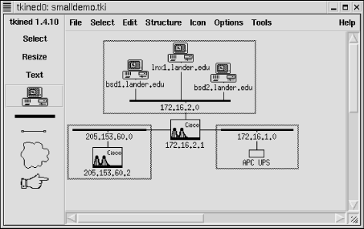
Figure 7-3. Demo network
7.2.3.1. ICMP monitoring
ICMP monitoring periodically sends an ECHO_REQUEST packet to a remote device to see if the connection is viable. (We've seen examples of this before.) SNMP monitoring is superior when available since it can be used to retrieve additional information. But if the device doesn't support SNMP, or if you don't have SNMP access, ICMP monitoring may be your only option. Your ISP, for example, probably won't give you SNMP access to their routers even though you depend on them. To use ICMP monitoring with tkined, use Tools IP-Monitor. This will
add an IP-Monitor menu to the menu bar. Next, select a device on your
map by clicking on the Select tool and then the device's icon.
Now, use IP-Monitor Check Reachability. (See Figure 7-4.) Since the idea of monitoring is to alert you
to problems, if your device is reachable, you shouldn't see any
changes. If the device is nearby and it won't create any
problems, you can test your setup by disconnecting the device from
the network. The device's icon should turn red and start
flashing. A message will also be displayed on the map under the icon.
IP-Monitor. This will
add an IP-Monitor menu to the menu bar. Next, select a device on your
map by clicking on the Select tool and then the device's icon.
Now, use IP-Monitor Check Reachability. (See Figure 7-4.) Since the idea of monitoring is to alert you
to problems, if your device is reachable, you shouldn't see any
changes. If the device is nearby and it won't create any
problems, you can test your setup by disconnecting the device from
the network. The device's icon should turn red and start
flashing. A message will also be displayed on the map under the icon.
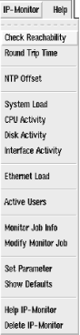
Figure 7-4. IP-Monitor menu
If the device is in a collapsed group, the icon for the group will flash. Thus, you don't have to have an icon displayed for every device you are monitoring. You could start a monitor on each device of interest, put related devices into a group, and collapse the group. By creating a number of groups, all collapsed, you can monitor a large number of machines from a small, uncluttered map and still be able to drill down on a problem. When you reconnect the device, the icon should turn black and then stop flashing. It may take a minute to see these changes. By default, the system polls devices every 60 seconds. You can check which devices are being monitored by selecting IP-Monitor Monitor
Job Info. A pop-up box will display a list of the monitors that are
running.
If you want to change parameters,
select IP-Monitor Modify Monitor Job. This will bring up a box
displaying a list of running jobs. Select the job of interest by
clicking on it, then click on the Modify button. The box listing jobs
will be replaced by a box giving job parameters, as shown in Figure 7-5.
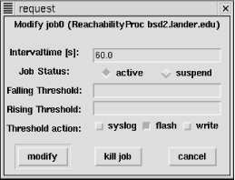
Figure 7-5. Monitor job parameters
You can reset the polling rate by changing the Intervaltime field. The next two radio buttons allow you to suspend or restart a suspended job. The two Threshold fields allow you to establish limits on response times. If your system normally responds within, say, 100ms, you could set Rising Threshold to 200ms. If the quality of the connection degrades so that response time rises above 200ms, the system will alert you. The Threshold Action buttons allow you to say how you want to be notified when thresholds are crossed. Finally, you can commit to the changes, terminate the job, or cancel any changes. If you are really interested in tracking how response time is changing, you can select IP-Monitor Round
Trip Time. A small box will appear on the map, partially obscuring
the icon. (You can drag it to a more convenient location.) This is
called a stripchart and will plot round-trip
times against time. You can change parameters using IP-Monitor
Modify Monitor Job. You can change labels and scale by right-clicking
on the chart.
Figure 7-6 shows two stripcharts. The chart in the
upper right really isn't very revealing since the device is on
the local network and everything is working OK. The latest round-trip
time is displayed below the stripchart and is updated dynamically. A
device does not have to be integrated into the map. The site
www.infoave.net, an ISP at the bottom of the
figure, has been added to the site and is being monitored. This icon
is partially obscured by a slider used to adjust the scale. Other
ICMP monitoring options, shown in Figure 7-4, are
available.
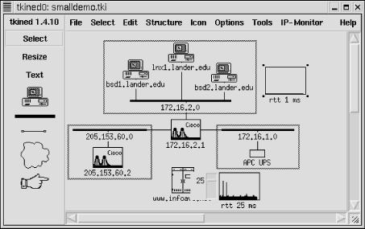
Figure 7-6. Map with stripcharts
7.2.3.2. SNMP traps
Before you begin using tkined for SNMP-based monitoring, you want to make sure the appropriate MIBs are installed. These will usually be located in a common mibs directory under the tnm library directory, e.g., /usr/lib/tnm2.1.10/mibs or /usr/local/lib/tnm2.1.10/mibs. You will want to copy any enterprise MIB you plan to use to that directory. Next, you should verify that the files are compatible. Try loading them into scotty with the mib load command, e.g., mib load toaster.mib. If the file loads without comment, you are probably OK. Finally, you will want to edit the init.tcl file to automatically load the MIBs. Ideally, you will have a site-specific version of the file for changes, but you can edit the standard default file. You will want to add a line that looks something like lappend tnm(mibs) toaster.mib. You are now ready to start tkined and do SNMP-based monitoring. The first step is to go to Tools SNMP-Monitor. This will add
the SNMP-Monitor menu to the menu bar. This menu is shown in Figure 7-7. To receive traps, select SNMP-Monitor
Trap Sink. A pop-up box will give you the option of listening to or
ignoring traps. Select the Listen button and click on Accept to start
receiving traps. At this point, the station is now configured to
receive traps.
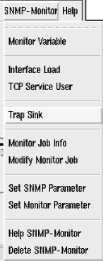
Figure 7-7. SNMP-Monitor menu
To test that this is really working, we need to generate some traps for the system to receive. If you are a scotty user, you might use the code presented in the last section. For this example, a UPS that was being monitored was unplugged. Regardless of how the trap is generated, tkined responds in the same way. The device icon blinks, a message is written on the map, and a new window, shown in Figure 7-8, is displayed with the trap messages generated by the UPS. Note that the duration of this problem was under 5 seconds. It is likely this event would have been missed with polling.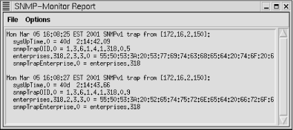
Figure 7-8. SNMP monitor report
7.2.3.3. Examining MIBs
Tools SNMP Tree provides one way
of examining MIBs. Or, if you prefer, you can use Tools
SNMP-Browser. The SNMP Tree command displays a graphical
representation of a subtree of the MIB. This is shown in Figure 7-9.
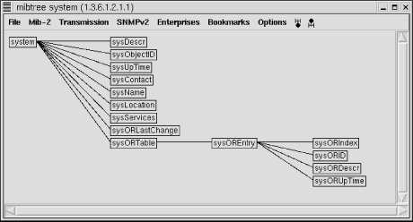
Figure 7-9. SNMP tree
Menu items allow you to focus in on a particular subtree. For example, the MIB-2 menu shows the various subtrees under the MIB-2 node. The Enterprises menu shows various enterprise MIBs that have been loaded. You simply select the MIB of interest from the menu, and it will be displayed in the window. You can click on an item on the tree and a pop-up window will give you the option of displaying a description of the item, retrieving its value, changing its value, or displaying just the subtree of the node in question. Of course, you will need to select a system before you can retrieve system-specific information. The SNMP-Browser option provides much the same functionality but displays information in a different format. If you select SNMP-Browser MIB Browser, you will be given a text box listing
the nodes below the internet node
(.1.3.6.1) of the MIB tree. If you click on any
of these nodes, the text box will be replaced with one of the nodes
under the selected node. In this manner, you can move down the MIB
tree. After the first box, you will also be given the option to move
up the tree or, if appropriate, to the previous or next node in the
subtree. If you reach a leaf, you will be given a description of the
object, as shown in Figure 7-10. If the object can
be changed, you will be given that choice as well.
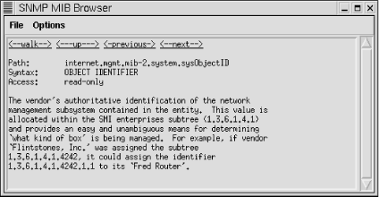
Figure 7-10. MIB Browser
You are also given the option to walk a subtree. This option will attempt to retrieve all the object values for leaves under the current node. This can be quite lengthy depending on where you are in the tree. Figure 7-11 shows the last few entries under ip. Most of the values have scrolled off the window.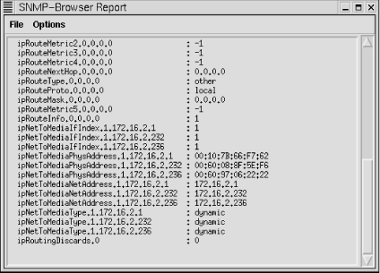
Figure 7-11. Walk for IP
SNMP Tree provides a nice visual display, but it can be a little easier to move around with the MIB Browser. Take your choice.7.2.3.4. Monitoring SNMP objects
In much the same way you monitor devices, you can monitor SNMP objects. First, you will need to identify the object you want to monitor. This can be done using the techniques just described. With MIB Browser you can select monitoring at a leaf. Alternately, you can select SNMP-Monitor Monitor
Variable. This is a little easier if you already know the name of the
object you want to monitor. A pop-up box will request the name of the
object to monitor. Type in the name of the object and click on Start.
(Don't forget to select a system first.) A stripchart will be
created on your map displaying the values for the monitored object.
7.2.3.5. Other commands
Tools SNMP Trouble installs
the SNMP-Trouble menu. The name is somewhat misleading. Generally,
the SNMP-Trouble menu provides quick ways to collect common, useful
information. First, it can be used to locate SNMP-aware devices on
your network. By selecting multiple devices on the map and then
choosing SNMP-Trouble SNMP Devices,
tkined will poll each of the devices. The output
for the test network is shown in Figure 7-12.
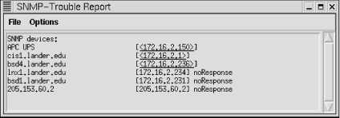
Figure 7-12. SNMP devices
Please note that noResponse does not necessarily mean that the device is down or that it doesn't support SNMP. For example, it may simply mean that you are not using the correct community string. The SNMP-Trouble menu also provides menu options that will return some of the more commonly needed pieces of information such as system information, ARP tables, IP routing tables, interface information, or TCP connections. A few of these reports are shown in Figure 7-13.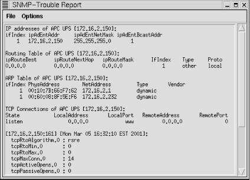
Figure 7-13. SNMP-Trouble reports
7.2.3.6. Caveats
tkined is a fine program, but it does have a couple of problems. As noted in the last chapter, it will let you exit without saving changes. Another problem is that it doesn't recover well from one particular type of user error. When you are through with a window or display, you should shrink the window rather than closing it. If you close the window, tkined will not automatically reopen it for you. When you later use a command that needs the closed window, it will appear that tkined has simply ignored your command. Usually, you can simply unload and then reload the menu that contains the selection used to initially create the window. Typically, the last item on a menu (for example, see Figure 7-4 and Figure 7-7) will remove or delete the menu and unload the subsystem. Then go to the Tools menu and reload the menu. The appropriate subsystem will be reloaded, correcting the problem. This can be very frustrating when you first encounter it, but it is easy to work around or avoid once you know to look for it. One other problem with tkined is that it uses a single community string when talking with devices. This can be changed with Set SNMP Parameters, which is available on several menus. But if you are using different community strings within your network or prefer using read-only strings most of the time but occasionally need to change something, changing the community string can be a nuisance. Overall, these few problems seem to be minor inconveniences for an otherwise remarkably useful program. The program has a number of additional features -- such as sending reports to the syslog system -- that were not discussed here. You should, however, have a pretty good idea of how to get started using tkined from this discussion. |  | |
| 7. Device Monitoring with SNMP |  | 7.3. Non-SNMP Approaches |